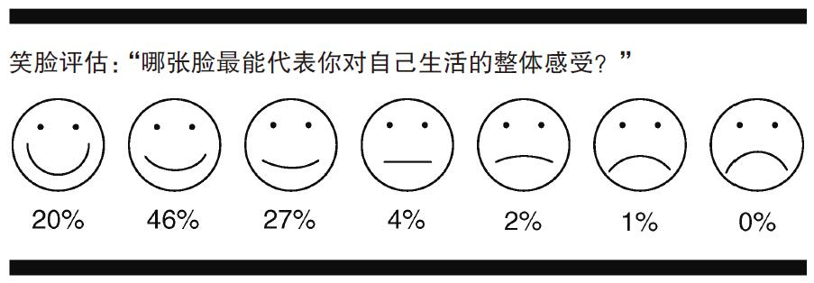

语出欧内斯特·海明威
挑战之处
幸福是可以测量的吗？简单来说，是的……吧。为了了解这其中蕴含的挑战，让我们来假想两个国家，由多尼亚和马尔多尼亚。以下是这两个国家人民生活一瞥：
我想大部分读者应该会同意由多尼亚人总体上来说很幸福，而马尔多尼亚人不幸福。不仅如此，这也是一项非常重要的事实。在我们决定自己想要的生活时，由多尼亚人的生活中流露出更多的幸福感，这是他们的主要加分项。事实上，很难想象在现实生活中，马尔多尼亚怎么可能会是两者之中更适合居住的地方。
有效的幸福测量方式会告诉我们，由多尼亚人比马尔多尼亚人更幸福。而且测试结果还应该在某些程度上体现出这种差异的大小：在我们的幸福测量表中，由多尼亚的得分应当比马尔多尼亚高出许多。我们的幸福测试能实现这一目标吗？
有人可能会认为，像幸福这样复杂难懂的东西是无法测量的。你想得确实没错，根本无法精准地测量幸福。我们永远不可能用一个具体的数字来表示一个人到底有多幸福。
不过在大多数情况下，我们可以大致测量出哪些群体的人大体上更幸福，我们也可以找出哪些东西会让人们更幸福或更不幸福。回答这些问题并不需要精确的测量，并且在比对基数庞大的人群时，很多误差可以忽略不计。因为在每一组测试中都会产生相同的误差，所以组别之间的差距可能并不是因为这些误差。举个例子，可能人们在雨天的幸福感会降低一些，因为天气让他们的想法变得消极。然而有工作的人幸福感比失业的人要高这件事并非受到天气的影响。因为不太可能所有失业的人都在雨天接受幸福感问卷调查，而有工作的人都在晴天接受同样的调查。失业人群在幸福感测试中的结果更差主要还是因为他们确实 更不幸福。
这么想吧：大部分人都认可抑郁和焦虑测试问卷能够反映出人们究竟有多抑郁或多焦虑。在抑郁调查问卷中得分很低的人多半心情也不是很好。请注意，测量幸福所使用的也不过就是 幸福感问卷。它与抑郁和焦虑调查问卷唯一的区别就是，后两者分别侧重于研究不同种类的不幸福感。测量幸福并不比测量抑郁和焦虑更神秘或更艰巨，也不应当比后两者更有争议。
因此，有用的幸福测量方式其实比你想象的更容易实现。事实上，几乎目前所有使用中的测量方式都在跟踪调查一些合情合理的信息，如笑容、健康状况、寿命、应激激素、朋友评价等等。
幸福测试应当具备的要素
很多测试方法依然有很大的提升空间。最无效的一类调查可能就是让被测试者说出他们有多“幸福”。由于不同的人对“幸福”这个词的理解不同，因而被测试者回答的其实都是不同的问题。有些人认为，研究人员想知道的是他们对生活是否满意，其他人则认为，这个问题需要评估的是他们的情绪幸福感。（试想一下维特根斯坦对这些问题的回答会有什么样的天壤之别。）因此，研究人员必须首先确定他们研究的到底是幸福的哪层含义，并使用能够清楚跟踪调查那层含义 的测试方法。
还有一些测试问卷调查的是人们的生活满意度，至少这些测试的主题定义比较明确。不过我们已经知道，生活满意度跟我们在这里探讨的情绪层面的幸福大不相同。
假如我们不得不 只问一个问题，那我可能会请被测试者给他们自己的情绪状态评分，最低分代表“抑郁且压力大”，最高分代表“快乐且放松”。不过，用一个简单的数字来总结你的整体情绪状态依然是一桩难事。更加严谨的测试调查会进一步详细询问关于情绪状态的问题，分别涉及幸福的三个方面。例如，你现在感到愤怒吗？是否感到有压力或者在为某事担心？你是否觉得自己“被拖累了”，并且缺乏能量？又或者，你昨天大笑或微笑的时间多吗？你有没有参与什么有趣的活动？你最近能够享受所做的事情吗？你近来是否易怒？诸如此类的问题。通过这些问题，我们可以大致获得一个人的情绪状况，并进行大概比对。
在未来的调查测试中，研究人员很有可能会在类似的自我评估问题之外，进一步研究应激激素、脑成像、声音和表情分析等影响因素。不过目前，我们在幸福研究中的大部分依据仍旧来自自我评估。
在阅读关于幸福的科学研究时，最好谨记以下三个问题：
1. 这项研究测试的主体是什么？ 在理想情况下，一份自我评估式的幸福测试应当包含不同的问题来评测情绪幸福感的所有主要方面，如协调、参与和认可。
2. 研究中用来进行比对的族群是否在回答关于幸福的问题时持有不同倾向？ 例如，意大利人有一种“且听我慢慢道来”的文化，而美国人默认的态度就是“没啥可抱怨的”，所以意大利人看待问题就不及美国人那么积极正面。这么一来，即便一个意大利人跟一个美国人同样幸福，他的幸福自我评估得分却可能更低。
3. 假如研究表明，某些族群的人是“幸福”的，那么有什么证据？ 大部分这样的研究主体其实是生活满意度，而非情绪层面的幸福。假如这些研究针对的确实是情绪幸福感，那么我们得问自己，究竟人们幸福到什么程度 才能被称作“幸福”而不是“不幸福”。接下来我们就来讨论这个问题。
多幸福才是幸福？
假设有一群人体验到的积极情感比消极情感要多，我们是否就能下结论说这些人是幸福的？标准答案会说，“没错”。然而似乎从未有人严谨地证明过这一点，这只是一个非常经不起考验的假说。还记得我们之前讨论过的罗伯特的案例吗？他的积极情绪的确比消极情绪要多，然而很明显，他是一个不幸福的人。不管是谁，当一个人的生活中感觉很差的时间跟感觉很好的时间几乎一样多时，这无论如何也不能算作一个很美满的人生。这就好像你每吃十餐佳肴就要忍受九顿难吃的饭，每获得十次高潮就有人戳九下你的眼睛似的，听起来糟糕透顶。事实上，很多哲学家都为几乎不值得度过的人生设定过门槛，而且标准都很类似，即你从一段人生中获得的快乐刚好比经受的痛苦多一点点。或许我们可以得出结论，认为幸福和几乎不值得度过的人生中间应该有不可逾越的鸿沟。不然的话，按照上文的分析，几乎不值得度过的人生只不过比死亡好一点点。也就是说，我们要么幸福，要么死？
英国哲学家约翰·斯图尔特·密尔（1806—1873）曾经写道，幸福就是“人生当中的痛苦少且短，（同时）趣味横生且多姿多彩”。尽管我们应该将重点更多放在情绪状态而不是快乐上，不过他的观点还是比“要么幸福要么死”有道理得多。我们能进一步阐述他的观点吗？有些研究认为，幸福的门槛就是积极情绪和消极情绪的比例达到3:1。只要越过这道门槛，人们就会各有各的幸福。而当积极和消极情绪的比例没有达到这个标准时，人们的情况便会比较糟糕。我怀疑事实真相应该会比这个结论更复杂一些。但至少我们可以确信：积极情绪状态远远超过消极情绪状态或许才是获得幸福的前提 。不过，大部分研究人员都选择了错误的研究幸福的捷径，过度夸大生活幸福的人数。
以下这个观点并没有经过学术论证：假如一个人很幸福，人们会倾向于认为他的人生一切顺利；假如此人不幸福，那他的人生中一定有诸多坎坷。因此当研究表明大部分人口很幸福时，人们自然而然会认为大部分人的人生是一帆风顺的。既然如此，为何不转而关注一些更为紧迫的问题呢？
举个例子，让我们假设幸福的前提确实是积极情绪和消极情绪的比例为3:1。那么，某些应当被拿来证明大部分人很幸福的依据可能实际上恰好证明了相反的 结论。例如，一项关于德国人的研究发现，在34%的时间里人们的情绪是消极的。这被用来论证大部分人生活幸福。然而，这可能实际上恰恰证明大部分人并不 幸福。这可是两个天差地别的结论！
人们真的像他们所说的那样幸福吗？
而且，研究调查的结论往往并不止于大部分人是幸福的，研究人员喜欢宣称极大部分 人是幸福的。比如说，1976年曾经发表过一篇关于美国人的研究报告（图7）。这篇研究的引用量很高，其中，93%的受访人士表示自己很幸福，只有3%的人不幸福 ，没有人选择七个待选项中最消极的那个表情。2007年的一份盖洛普民意调查则显示，92%的美国人认为自己很幸福，只有6%“不那么幸福”（这是选项中最消极的一个）。令人印象深刻的是，家庭总收入超过75000美元的人中，有98%表示很幸福，只有2%表示“没那么幸福”。世界价值观调查是全世界规模最大的幸福调查之一，其调查结果显示，在1995年，94%美国人认为自己是幸福的。

图7 1976年一份幸福调查研究中使用的笑脸图
基本上大家都会把这样高的比例称作“所有人”，就像人们常说的“所有人都知道，人类已经登上月球”中的“所有人”一样。严格说来，6%的美国人并不相信这件事。不过你可以煽动总人口的6%说出任何话来。尽管如此，想让这些人开口宣布自己不幸福，还是没那么简单。
就算是在能想象到的最完美的社会中，也依然会有人随时落入不幸福的境地。例如，家人离世、患上绝症、犯蠢等等，都可能成为诱因。在这种情况下，94%这个数字表示美国人的幸福比例已经快要达到理论数额的极限。在幸福百分比上，我们可能已经实现了一个社会所能做到的极限。除了冰岛，那儿97%的人口认为自己很幸福。事实上，有不少国家能够与美国相媲美，或取得了超过美国的成就。委内瑞拉和菲律宾也紧随美国之后，有93%的人口认为自己很幸福。
大部分人可能确实很幸福。人们常常比我们预计的要更幸福。毫无疑问，知识分子喜欢强调痛苦在世界上的存在，就像本章开头海明威那句名言所体现的一样。
但这些数字非常荒谬。哪怕只是稍微接触一下你周围那些活生生的人，你也会意识到这样的数字极不可信。我并不认为这种数字毫无意义。百分比越高，可能确实表明幸福的人越多。只是这些数字中都有夸张的成分，因为不管从“幸福”的哪个重要层面来说，都不可能有那么多人是幸福的，不管是在当下，还是人们所能记得的任何一个时代。
以美国为例，首先，约有1%的美国人在服刑，3%的美国人正处在刑事司法体系的监管下。也有可能他们就是感到很幸福，所以接下来我们来看一些更直观的证据。
我在这里罗列一些抑郁症和焦虑症方面的数据。在关于美国的研究中，自称处于“非幸福”状态的人的比例，包括那些不幸福的和勉强可以过活的人，跟重性抑郁患者的比例一样多。我们这里所说的抑郁不仅仅是一种悲伤的情绪，而是一种会造成严重后果的疾病，能令病人一心求死。事实上，无论何时，总有12%的人口处于重性抑郁或广泛性焦虑症中。2006年，44岁以下的成年人中，有11%在服用抗抑郁药物。随便哪一天，总会有16% ～ 20%的美国人表示自己“昨天大部分时间”都很悲伤。
造成这种现象的原因之一可能是孤独。一项大型研究结果表明，美国人平均每人只有两位知心好友，知心好友的定义是可以与他们讨论人生大事的人。超过半数人并没有可以吐露心事的朋友，还有四分之一的美国人完全没有知心好友。神经科学家约翰·卡乔波是研究孤独领域的顶尖学者，据他预计，“在任何时间，约有20%的人，也就是说光在美国便有六千万人感到自己非常孤独，并且他们的孤独感就是造成人生不幸福的主要原因”。
那么面对压力，美国人表现如何呢？2007年，有三分之一的美国人表示自己处在极度压力下，在总分10分的基础上给自己的压力评分在8 ～ 10之间；有四分之三的美国人表示，在受访前一个月间曾经历过压力带来的身体痛苦；还有36%的人表示压力令他们虚弱到不堪一击，想号啕大哭；同样有36%的人表示他们会因为压力而略去一餐饭。并不令人意外的是，有10% ～ 15%的美国人饱受长期失眠的困扰。
而针对孩童的研究数据更加让人质疑近乎全民幸福的假说。让我们来品品以下这些研究数据，其中大部分研究的受访者是来自富裕家庭的孩子：
所有这些数字都不能表明受访者生活在一个“极大部分人感到幸福的社会”中，也没有人会认为他们所处的社会是健康或者甚至是健全的。之所以会有这样的结果，显然不是因为年轻人注定会产生自杀的念头。这些数字当然不代表我们不能说美国或中国台湾地区的大部分人是幸福的，毕竟有些研究结果可能在较大范围内并不适用，而且每项研究都会存在漏洞。但我们起码可以认为，不可能有94%之多的美国人是幸福的，至少从情绪幸福角度来看如此。很明显，自我评估的数据中有些水分。
有两个原因会令人虚报自己的幸福感。首先，“积极偏误”会影响我们看待自己的方式，我们会倾向于以诗化记忆的滤镜来看待我们自己和我们的未来，这种现象又叫正向错觉。尽管每种社会文化环境所展示的积极幻想程度不同，但很有可能在人们被问到自己有多幸福这个问题时，大部分人喜欢微调一下自己的回答，给出偏向积极的答案。
其次，我们还欠缺一个清楚界定幸福意味着什么的标准，这个概念在大部分人脑海中是很模糊的。这就表示人们有很多种解读幸福的方式来支撑自己的答案，他们并不是真的在说谎。除非人生一塌糊涂，不然大部分人在断定自己幸福时并非撒谎。假如你能诚实地论证自己是幸福的，为什么不这样做呢？假如你不需要参加匿名戒酒互助小组的会面，那你为什么要说自己不幸福呢？难道有人逼你吗？一般来说，除非有无法反驳的事实摆在眼前，形成压力，否则人们不会承认自己愚蠢或丑陋。幸好，这些概念都很抽象，以至于人们很难得出这样的答案。同样，除非生活失败到无法包装粉饰，很少有人会主动说自己不幸福。
当然，这些数据依然能够告诉我们幸福的相对 程度，让我们知道哪些人更幸福，哪些事情会带来更多幸福感。这些数据能告诉我们，由多尼亚人比马尔多尼亚人更幸福，但不能清楚地指出究竟有多少人真正获得了幸福 。除了一些明显的案例，如抑郁症患者和有贪食症的10岁孩童外，我们真的不知道世上有多少幸福的人。